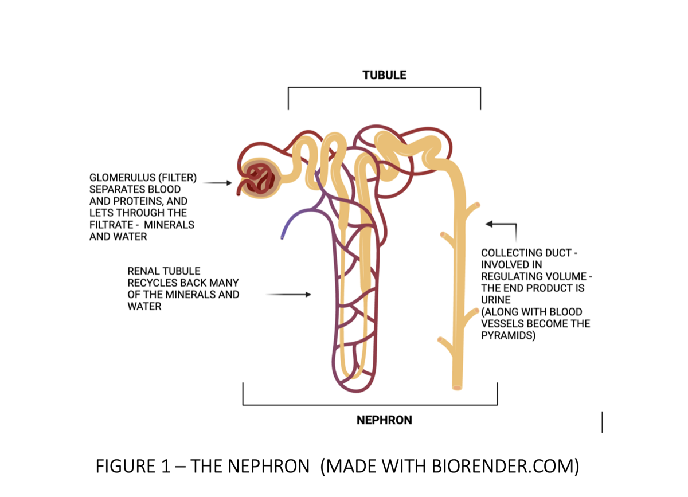
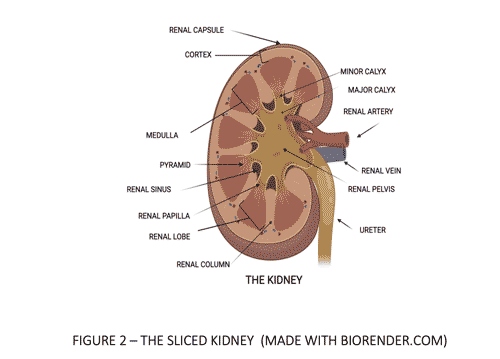
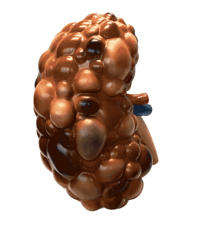

MEDICAL USES
The kidneys are organs in the back, protected by the lower rib cage. They filter blood to make urine. Each kidney starts with around one million filtering units known as nephrons, but over the years, many become worn to the extent they no longer function, mainly because of natural aging but also because of disease.
The nephron (figure 1) starts as a glomerular filter, a ball-shaped structure that creates a system to separate blood and proteins from minerals and water. The minerals and water, referred to as filtrate, are mostly recycled back into the body through the tubules, but some are eliminated as urine.


The collecting duct carries urine into the renal pelvis, which travels down the ureter and is eliminated. The first figure, made with biorender.com, illustrates what the nephron would look like if teased out of the kidney. Figure 2 depicts what a sliced kidney looks like. The glomerular filters reside in the kidney's cortex or outer part. The medulla, or middle part, contains the tubules, but the collecting ducts extend downward and converge to form the papilla at the top of the pyramid. The urine passes through the minor and major calyces into the renal pelvis. It then travels down the ureter to the bladder.
Several techniques help doctors image kidneys. Renal ultrasound is the least invasive but gives limited information. Renal computerized tomogram and magnetic resonance imaging studies give more detailed images but may require contrast and large machines. Thus, there is a long-felt need for a device that can noninvasively give the user a high-resolution image.
This new analytic imaging will enable doctors to accurately approximate the number of viable glomeruli in the cortex or outer part of the kidney. Since disease leads to a loss of glomeruli, which are filled with blood vessels, the density of the cortex will change with increased disease.
This will help nephrologists accurately determine the extent of disease, and will help transplant teams determine the suitability of a kidney donor.
The tool will also help nephrologists determine whether the inside part of the kidney, the area containing the renal papilla and the tip of the pyramids, are damaged.

Polycystic kidney disease is a hereditary condition where large cysts form in the kidney. This disease is progressive, but therapies that can control cyst growth are emerging. Being able to track the total cystic volume will help nephrologists learn more about the effects of therapy on cyst growth and change.
CHALLENGES
"I'm convinced that about half of what separates the successful entrepreneurs from the nonsuccessful ones is pure perseverance." Steve Jobs
Those considering this project as an investment need to appreciate that results are not going to happen quickly, and that the project may not succeed for many reasons, Several obstacles lie ahead when developing a new product, and the more helpful and useful, the more difficult it will be to bring the product to market. But this is the environment where we do not just exist, but best succeed.
Legal details regarding licensing the technology need to be worked out. The imaging prototype must first be designed, built, and tested. Marketing and distribution channels need to be established, and a maintenance strategy established. With medical devices, preliminary tests need to demonstrate that the device delivers the signal from the source without excessive heat and that the reflectivity tracked and captured by the transducer sensors. The computer must then return the precise voxel location and its characteristics, as determined by the angles of nearby voxels, and the reflectivity.
The software must be developed to capture all the data and map it to the voxel location. Software must take the position of each voxel and construct a three-dimensional image. The image will need to be clear and interpretable. The software will also need to be taught how to interpret its results. Once this is tested to be safe and functional, the product must go through the clinical trials required by the FDA. Once FDA approval has been granted, the product needs to enter marketing and distribution channels, and a maintenance strategy needs to be established.